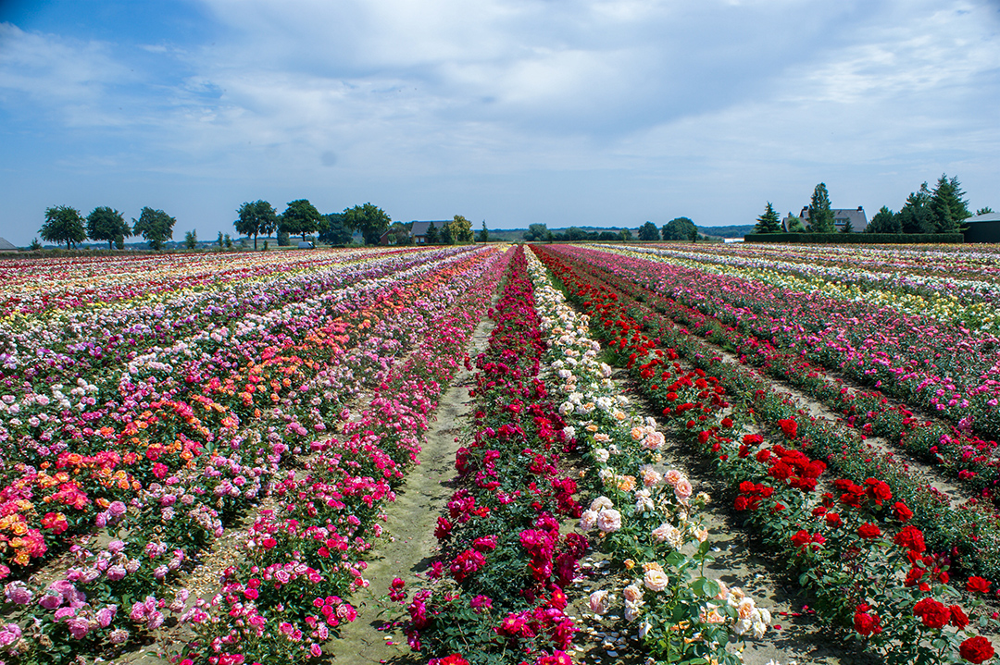

Isparta Hakkında
Isparta, "Güller Diyarı" olarak bilinir ve gül üretimi ile ünlüdür. Türkiye'nin en büyük gül yağı üreticisi olan Isparta, bu güzel çiçekle özdeşleşmiştir. Ayrıca, doğa severler için harika bir destinasyon olan bu şehir, zengin bitki örtüsü ve dağlarıyla da dikkat çeker. Isparta, hem doğal güzellikleri hem de tarihi ve kültürel zenginlikleriyle öne çıkar. Gölleri, dağları ve lavanta tarlalarıyla benzersiz bir görsel şölen sunar.
Isparta'da Ziyaret Edilmesi Gereken Başlıca Yerler:
- Lavanta Bahçeleri: Isparta'nın Keçiborlu ilçesinde yer alan lavanta bahçeleri, yaz aylarında mor tarlalarla kaplanır ve her yıl binlerce turist çeker. Lavanta hasadı sırasında bölgeye gelenler, bu eşsiz doğal güzelliği deneyimleyebilirler.
- Davraz Kayak Merkezi: Isparta'nın en bilinen kış turizmi merkezi olan Davraz, kayak severler için mükemmel bir seçenektir. Kayak, dağcılık ve doğa yürüyüşü gibi aktiviteler, burayı dört mevsim tercih edilen bir tatil noktası yapar.
- Yazılı Kanyon: Isparta'nın en etkileyici doğal alanlarından biri olan Yazılı Kanyon, derin vadileri ve tarihi kaya yazıtlarıyla ünlüdür. Doğa yürüyüşleri yapmak ve bölgenin eşsiz manzarasını görmek için harika bir yerdir.
- Göller Bölgesi: Isparta, gölleriyle de tanınır. Eğirdir Gölü ve Kovada Gölü, bölgenin en büyük gölleridir ve doğa yürüyüşleri, tekne gezileri ve fotoğrafçılık gibi aktiviteler için ideal mekanlardır.